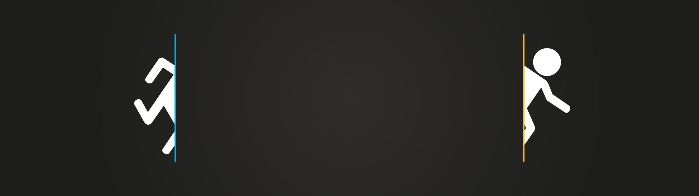
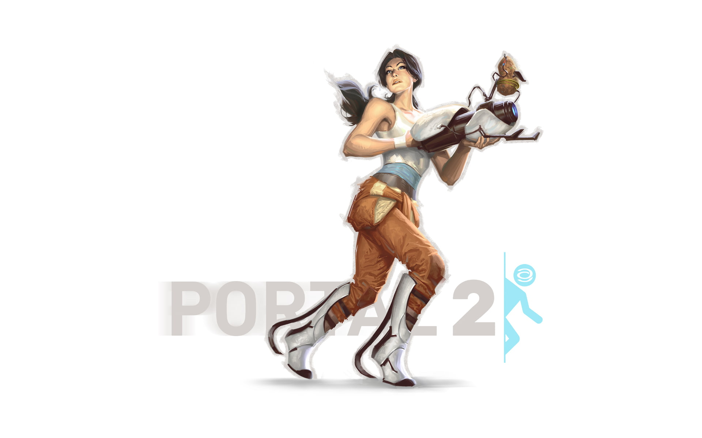
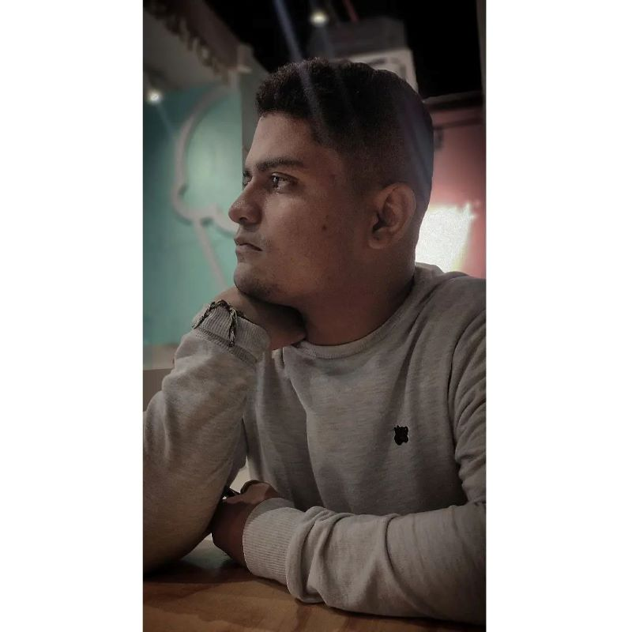
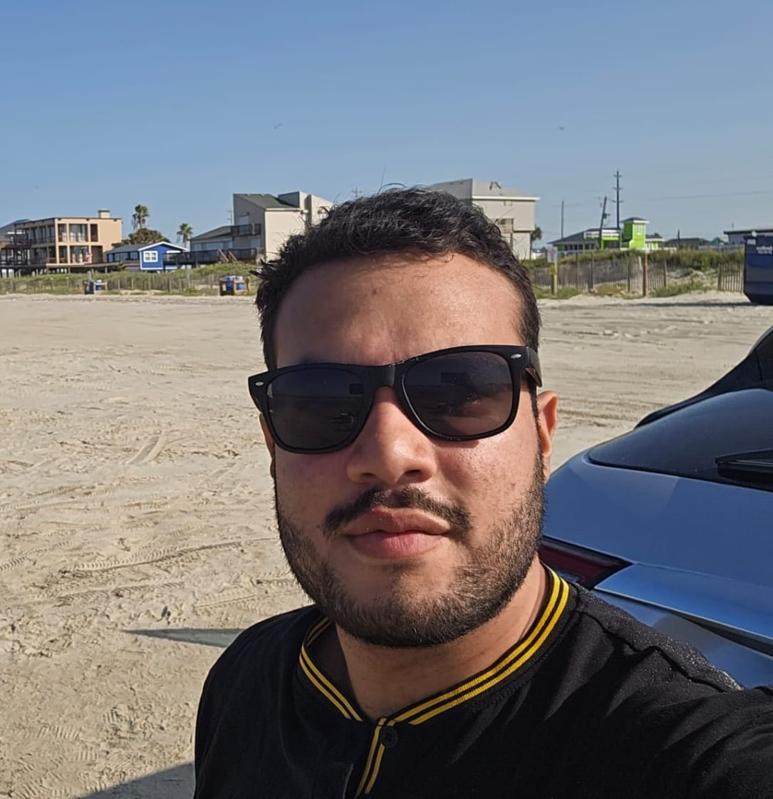

Minería de datos - 202410
Shalem Abud Janna Díaz
Harry Miyer Cepeda Reales
Jhimi Junior Vargas Guzman
Marta Patricia Arrieta Contreras
Andres Felipe Meza Caballero
Entendiendo Datos de las Icfes 2020
Haciendo vainas que todavía no tengo claro pero que ahí fue

Entendiendo...
Las pruebas Saber 11 son exámenes estandarizados para estudiantes colombianos al finalizar la secundaria. Los datos de estas pruebas incluyen puntajes en diferentes áreas, información de los estudiantes y características de las instituciones. El conjunto de datos del año 2020 está disponible, lo que facilita la realización del proyecto; estos datos ofrecen oportunidades para aplicar diversas técnicas de minería de datos, como clasificación, regresión, clustering y asociación.

descripcion de algo
cualquier cosa aca
Marta Patricia Arrieta Contreras
nació el día 22 de mayo del año 2002, (tiene 21 años) actualmente es estudiante de último semestre en ingeniería de sistemas y computación en la universidad del norte. En su trayecto de vida ha participado en varios cursos de seguridad, educación, inclusive de deporte. Se ha destacado por su liderazgo, versatilidad y compromiso.
Shalem Abud Janna Díaz
Lead DesignerEstudiante Ingeniería de Sistemas - Universidad del Norte

Jhimi Junior Vargas Guzman
es trabajo honesto, no sé que poner de descripcion so voy a esperar ver la suya pa copiarmeHarry Miyer Cepeda Reales
創一23 Años, estudiante de Sistemas y computación, becado por la fundación ColomboJaponesa y futuro científico de datos ( si Dios lo permite), planeando una estadía y trabajo en Japón con todo lo que implica.
